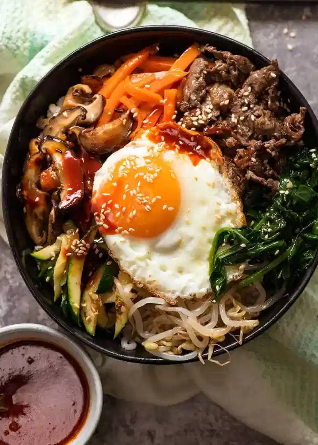

Bibimbap

Description
Bibimbap – Trust the Koreans to transform the humble rice bowl into a recipe that’s revered all around the world! With a kaleidoscope of seasoned sautéed vegetables, Korean marinated beef, and the signature fried egg, the thing that really seals the deal is the bright red, spicy Bibimbap Sauce that I can’t get enough of.
Mix it all up into one big delicious mess, then dig in!
Serves 4
Ingredients
- 4 cups cooked white rice
- 4 eggs
- 2 tsp sesame seeds
Korean Beef Marinade:
- 250 g/8oz beef tenderloin or thick steak , very finely sliced
- 1/4 green apple , grated using box grater
- 3 garlic cloves , minced
- 1 tbsp soy sauce , light or all purpose
- 1 tbsp honey (or brown sugar)
- 2 tsp sesame oil , toasted
Vegetables:
- 2 carrots , large, cut into 5 x 0.5cm/2 x 1/5" batons
- 2 zucchini , large, cut into 5 x 0.5cm/2 x 1/5" batons
- 1 bunch of spinach , cut into 5cm/2" lengths
- 8 dried shiitake mushrooms , large
- 4 cups bean sprouts
- 2 tsp garlic , minced (3 cloves)
- 8 tsp vegetable oil , separated
- 1/2 tsp salt
- 1.5 tsp soy sauce , light or all purpose
- 1/4 tsp fish sauce (sub soy)
- 1/4 tsp white sugar
- Sesame oil , toasted
Bibimbap Sauce:
- 4 tbsp gochujang paste
- 2 tbsp mirin
- 2 tbsp rice vinegar
- 1.5 tsp soy sauce
- 3 tsp white sugar
- 1 garlic clove , finely grated
- 2.5 tsp sesame oil , toasted
Steps
Bibimbap Sauce:
- Mix ingredients until sugar is dissolved.
Marinated Beef:
- Mix the marinade in a bowl, then add beef. Marinate for 30 minutes to overnight.
- Heat 2 tsp oil in a large skillet over high heat. Let excess marinade drip off then add beef. Cook for 3 - 4 minutes until cooked and there's some caramelised bits, then remove from skillet.
- Keep warm until required or reheat to warm.
Prepare Vegetables:
- Shiitake: Soak mushrooms in a large bowl of boiling water for 30 minutes, or until rehydrated. Drain, squeeze out excess water, then slice.
- Carrot and Zucchini salting (optional): Place carrot and zucchini in separate bowls, sprinkle each with 1/4 tsp salt, toss, leave for 20 minutes then drain excess liquid.
Cook Vegetables:
- Get 2 skillets going if you can!
- Shiitake: Heat 2 tsp oil oil in a skillet over medium high heat. Cook mushrooms for 2 minutes. Add 1.5 tsp soy, 1/4 tsp sugar, 1/2 tsp of garlic. Stir for 1 minute, then remove.
- Carrot: Add 2 tsp oil into the skillet, cook carrot until just tender (5 to 8 minutes), then remove.
- Zucchini: Cook as with carrot for 4 minutes.
- Spinach: Heat 2 tsp veg with a splash of sesame oil. Saute until starting to wilt. Add 1/2 tsp garlic, and salt to taste, stir, then remove. When cool, squeeze to drain out excess liquid.
- Beansprouts: Simmer in water for 5 min or steam in microwave for 3 min until floppy. Drain under cold water, then cool. Squeeze out excess liquid with hands, place in bowl. Mix with 2 tsp sesame oil, 1 tsp garlic, 1/4 tsp fish sauce.
- Vegetables can cool, they are meant to be at room temp or slightly warm.
Assemble:
- Fry eggs in a skillet to your taste (I like mine with runny yolks).
- Place warm rice in bowls.
- Top with vegetables and beef, as pictured in post, then lastly, the egg.
- Sprinkle with sesame seeds, drizzled with sesame oil. Serve with Bibimbap Sauce!